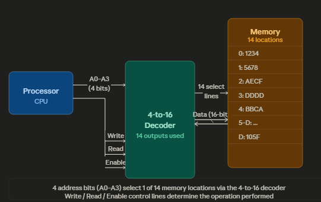
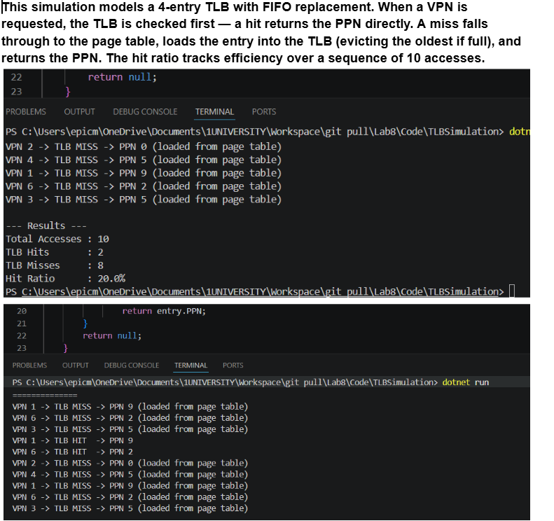

This portfolio contains screenshots and definitions for all of the tasks I have completed in my lab.
Lab 8 focused on memory management in operating systems, including virtual memory, paging, page tables, and translation lookaside buffers (TLBs). Different tasks involved calculating virtual and physical addresses, identifying page faults, and understanding how the MMU translates memory addresses. C# was also used to simulate TLB hits and misses, while later tasks explored memory interfacing and how processors communicate with memory using decoders and control bits.
(i) How many virtual pages exist, and what is the size of each page?
The virtual address uses a 4-bit VPN. Since each bit doubles the number of possibilities, 4 bits gives us 2⁴ = 16 virtual pages in total.
The offset portion is 8 bits wide. The offset determines how many bytes can be addressed within a single page, so page size = 2⁸ = 256 bytes per page.
(ii) Virtual address 0x2C8 is generated by a load instruction. Find the VPN, offset, and PPN.
First I converted 0x2C8 to binary. Each hex digit is 4 bits:
2 = 0010, C = 1100, 8 = 1000
Full binary: 0010 1100 1000 (12 bits total)
Since the address format is [4-bit VPN | 8-bit offset], I split it as:
VPN = 0010 = 2 (the top 4 bits)
Offset = 11001000 = 0xC8 = 200 in decimal (the bottom 8 bits)
Looking up VPN 2 in the page map: R=1 (resident in memory), D=0 (not modified), PPN=4.
To get the physical address I multiply the PPN by the page size and add the offset:
Physical address = (4 × 256) + 200 = 1224 = 0x4C8
Find the values of A, B, C and D
Each page frame is 4KB = 4096 bytes, meaning each frame spans addresses from its start to start + 4095 (since we count from 0). So each upper boundary = lower boundary + 4095.
Working through the table:
Frame 7: starts at 28672, so A = 28672 + 4095 = 32767
Frame 5: starts at 20480, so B = 20480 + 4095 = 24575
Frame 3: starts at 12288, so C = 12288 + 4095 = 16383
Frame 0: starts at 0, so D = 0 + 4095 = 4095
This makes sense as each frame is exactly 4096 bytes apart from the next (e.g. 4096, 8192, 12288...).
The 32-bit virtual address given is:
0000 0000 0000 0000 0011 | 0000 1011 0111
The first 20 bits represent the page number, the last 12 bits are the offset.
2.a What virtual page is referenced?
Reading the first 20 bits: 0000 0000 0000 0000 0011 = 3 in decimal. So virtual page 3 is being referenced.
2.b Page frame value in binary and denary
Checking the page table entry for VPN 3: the present/absent bit = 1 (page is in memory), and the frame value stored is 011 in binary = 3 in denary.
2.c Construct the physical address
The physical address is built by combining the page frame bits with the offset bits:
Frame: 011
Offset: 000010110111
Joining them: 011 000010110111 = 0x30B7
System specs: virtual memory = 2³² bytes, physical memory = 2²⁴ bytes, page size = 2¹⁰ bytes (1KB), TLB has 4 entries, VPN = 22 bits, PPN = 14 bits.
(i) How many pages fit in physical memory at once?
Physical memory size ÷ page size = 2²⁴ ÷ 2¹⁰ = 2¹⁴ = 16,384 pages
This also confirms why PPN is 14 bits — you need 14 bits to index 2¹⁴ frames.
(ii) How many entries does the page table need?
The page table needs one entry per virtual page. Number of virtual pages = 2³² ÷ 2¹⁰ = 2²² = 4,194,304 entries
(iii) How many bits per page table entry?
Each entry must store:
PPN: 14 bits
Resident bit: 1 bit (is the page in RAM?)
Dirty bit: 1 bit (has the page been modified?)
Total = 16 bits (2 bytes) per entry
(iv) How many pages does the page table itself occupy?
Total page table size = 4,194,304 entries × 2 bytes = 8,388,608 bytes = 2²³ bytes
Dividing by page size: 2²³ ÷ 2¹⁰ = 8,192 pages
Physical address for virtual address 0x1804
Step 1 — decompose the virtual address. The page size is 2¹⁰ so the lower 10 bits are the offset and the remaining bits are the VPN.
0x1804 in binary = 0001 1000 0000 0100
Splitting at bit 10:
Offset (bits 0–9) = 00 0000 0100 = 0x004
VPN (remaining bits) = 000110 = 6
Step 2 — check the TLB for VPN 6. It is present with R=1, D=1, PPN=2. This is a TLB hit, so the MMU does not need to access the page table at all.
Step 3 — construct physical address:
Physical address = (PPN × page size) + offset = (2 × 1024) + 4 = 0x804
The MMU found the translation directly in the TLB, saving time by skipping the page table walk entirely.
What happens when virtual address 0x0FC is generated?
0x0FC in binary = 0000 0000 1111 1100
Offset (lower 10 bits) = 0x0FC
VPN = 0
VPN 0 appears in the TLB, but its resident bit R=0, which means the page currently is not loaded into physical memory. This causes a page fault. The CPU hands control to the OS, which locates the page on disk, copies it into a free frame, updates the page table entry to R=1 with the new PPN, updates the TLB, and then re-executes the original instruction.
The memory interface uses Write, Read, Enable as control bits followed by 4 decoder bits, giving a 7-bit combined address.
a. Read the location containing FEAD
FEAD sits at index A. Converting A to binary: A₁₆ = 1010₂
Setting control bits for a read operation (Write=0, Read=1, Enable=1):
0 | 1 | 1 | 1010 = 0111010 = 0x3A
b. Write to location with index C
Index C in binary: C₁₆ = 1100₂
Setting control bits for a write operation (Write=1, Read=0, Enable=1):
1 | 0 | 1 | 1100 = 1011100 = 0x5C

